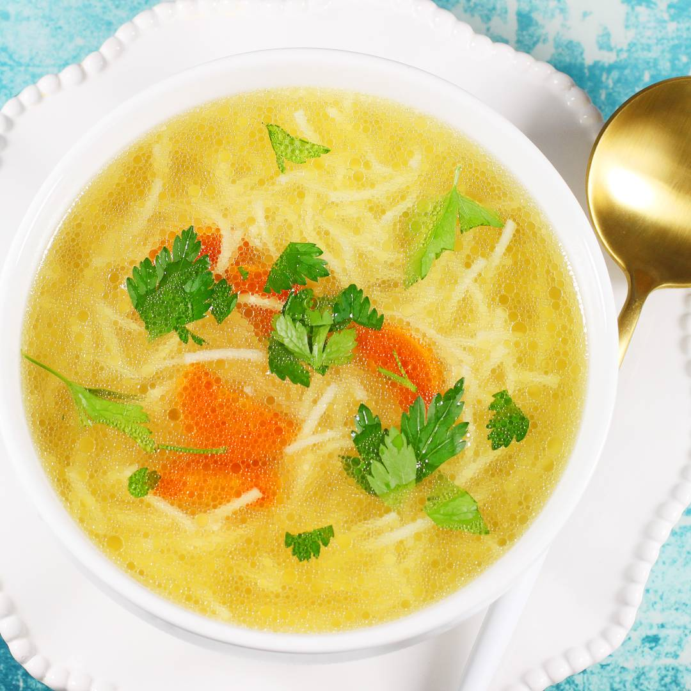

Rosół

Opis przepisu:
Zapraszam po najlepszy przepis na rosół z kury lub też rosół z kurczaka.
To wyjątkowo uniwersalna zupa, którą możesz podać z makaronem, zacierkami lub kluskami lanymi. Ten rosół jest świetną bazą do innych zup.
Zapraszam po najlepszy przepis na rosół z kury lub też rosół z kurczaka.
To wyjątkowo uniwersalna zupa, którą możesz podać z makaronem, zacierkami lub kluskami lanymi. Ten rosół jest świetną bazą do innych zup.
Składniki
- 1 kura lub kurczak o wadze około 1,5 kg
- 2 duże marchewki - 400 g
- 1 korzeń pietruszki - 100 g
- 1 średnia cebula - 130 g
- pół pora - 100 g
Sposób przygotowania
- W garnku zagotuj dwa litry wody
- Kurczaka o wadze około 1,5 kg (lub też kurę o wadze minimum 1,5 kg) umieść w garnku z wrzątkiem
- Ponownie zagotuj wodę z kurczakiem
- Po dwóch minutach wylej całą wodę
- Wylewasz wówczas mętną wodę ze ściętym białkiem